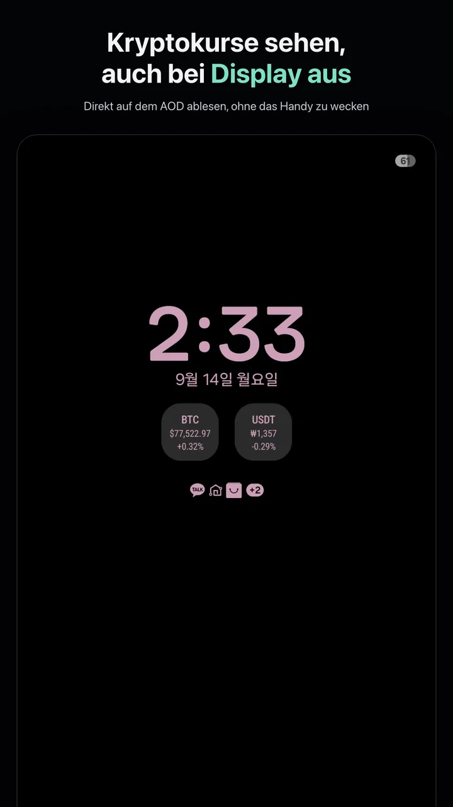
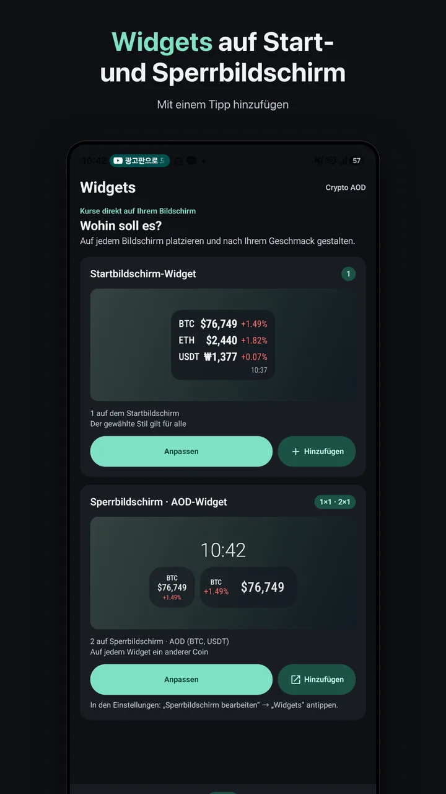
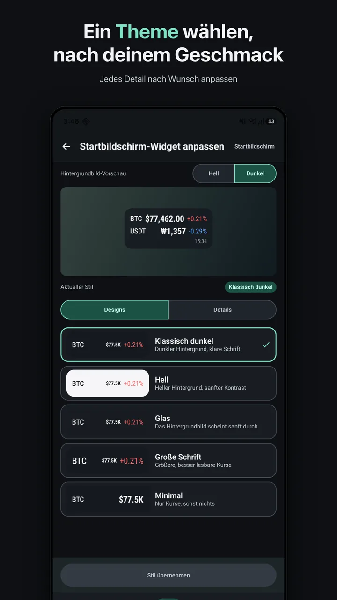
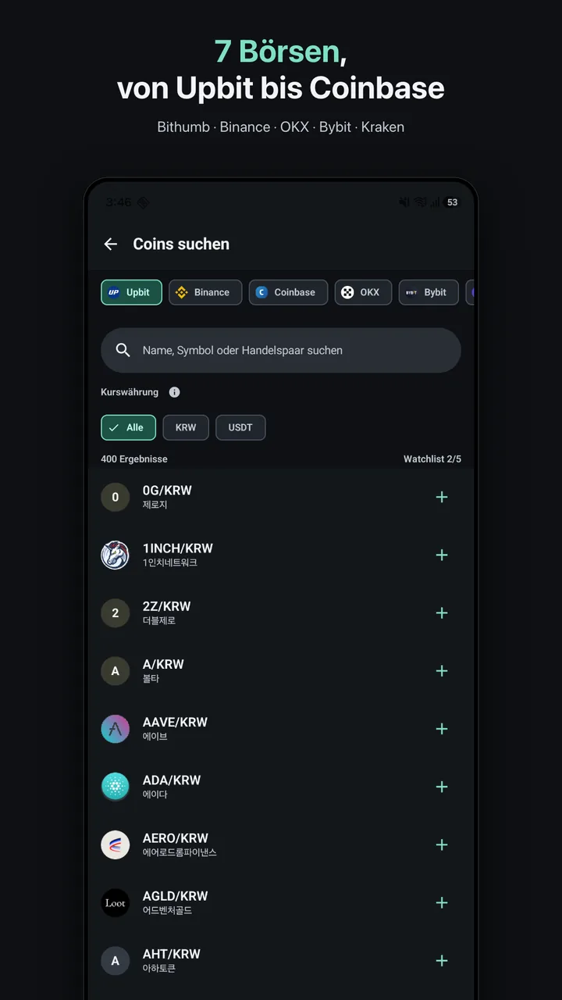
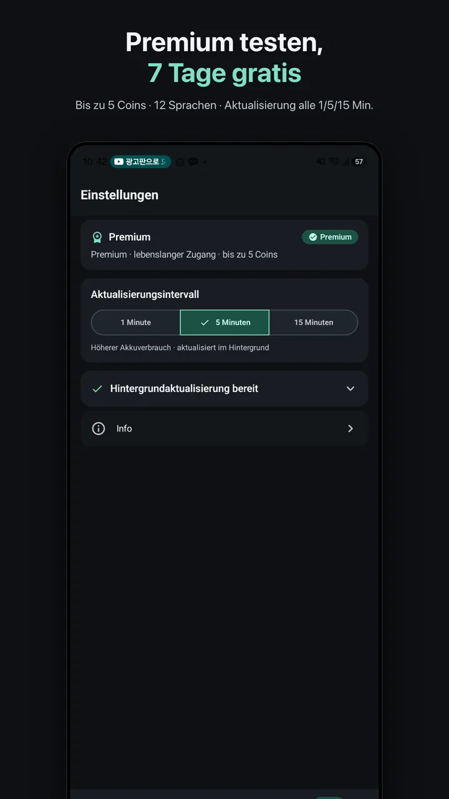

Always On Display & Sperrbildschirm
- 1×1- und 2×1-Widgets, je ein Coin
- Aktualisiert weiter, auch wenn das Display aus ist
- Zeigt den letzten Kurs mit Uhrzeit, falls ein Abruf scheitert
Für Galaxy-Smartphones
Bitcoin, Ethereum und mehr auf einen Blick, auch bei ausgeschaltetem Display. Ohne Entsperren, ohne eine App zu öffnen.

Coins hinzufügen: eine von 7 Börsen wählen und nach Name oder Symbol suchen.
Widget platzieren: auf Sperrbildschirm und Always On Display (Einstellungen → Sperrbildschirm und AOD → Sperrbildschirm bearbeiten → Widgets) oder auf dem Startbildschirm.
Aktualisierung wählen: alle 1, 5 oder 15 Minuten. Ein Tippen aufs Widget aktualisiert sofort.
Sperrbildschirm- und AOD-Widgets brauchen ein Galaxy mit One UI 7 oder neuer. Auf anderen Android-Geräten gibt es nur das Startbildschirm-Widget.




Einmalkauf, kein Abo
Kryptokurse auch bei ausgeschaltetem Display: Sperrbildschirm-, AOD- und Startbildschirm-Widgets.